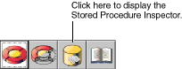
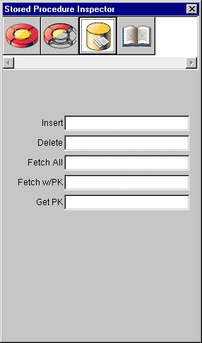

Table of Contents
Table of Contents  Previous Section
Previous Section
Assigning a Stored Procedure to an Entity
You can assign stored procedures to entities to be used to perform the following operations:
To assign a stored procedure to an entity in EOModeler:


Figure 39. The Stored Procedure Inspector
Table of Contents  Next Section
Next Section